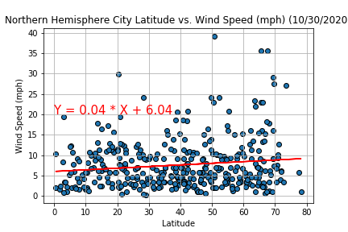
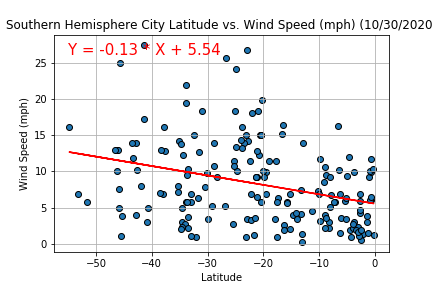

Full World Visualization

- There appears to be no clear trend between the two variables except that the earth has a relatively constant low wind speed nearly everywhere with a few much higher outliers.
Hemisphere Visualizations
North
South

- We see similar results here as in our combined plot.
- The data seems to fluctuate depending upon the run which plot has more high wind outliers. As of this writing there are a few cities with higher windspeed in the northern hemisphere (Near 40mph).
- Fun fact: Baku (the capital of Azerbaijan) is known as the City of Winds.